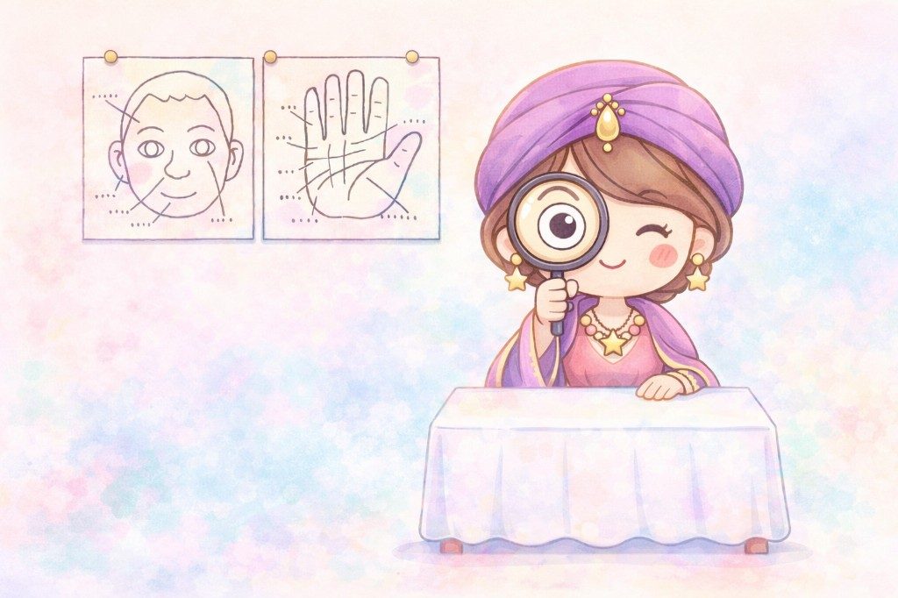

手のひらは、人生を変えられることを教えてくれる
はじめに
突然ですが、あなたの手のひらには、あなたの「これまで」と「これから」が刻まれています。
そんなふうに言われたら、少し不思議に感じるかもしれません。
こんにちは。
占い師の本田有紀華です。
「手相なんて変わるわけがない」
そう思われる方もいらっしゃるでしょう。
でも、実は──
手相は変わります。
変わらない占いと、変わる占い
生年月日と手相の違い
生年月日は変わりません。
星の配置も変わりません。
生年月日をもとに見る占いは、持って生まれた資質や流れを読むものです。
だから、前提は大きくは変わりません。
でも、手相は違います。
なぜ手相は変わるのか
手相に表れる3つのこと
手のひらには、
- これまでの選択や行動の積み重ね
- 思考や感情のクセ
- 生き方の変化
が、そのまま現れます。
だからこそ、手相は
「変えられない運命」ではなく「変えていける人生」を映す占術なのです。
手のひらに今が映る
心に寄り添える占術
未来を前向きに読める
手相が教えてくれる未来
人生の再スタートは、手のひらからできる
手のひらは、あなたの人生を映す鏡です。
今までどう生きてきたか。
どんな選択をしてきたか。
どんな思いを抱えてきたのか。
そのすべてが、そこに刻まれています。
そして、生き方が変われば、手相も、人生も、少しずつ変わっていきます。
30年・1,000名以上の実感
「人生は変えられる」を目で確認できる
私は占い師として30年間、これまで1,000名以上の方に手相の読み方と伝え方をお伝えしてきました。
手相は、
- 目の前の「今の状態」が現れる
- 変化を目で確認できる
- 意識と行動の変化が線に現れる
だからこそ、「人生は変えられる」と実感できる占術です。
手相が“愛される”理由
人の心が開く、たった一つの特性
手相には、ほかの占術にない魅力があります。
それは、相手の手に触れながら、人生を読み解けること。
目の前の人の手を取り、その人の人生を丁寧に言葉にしていく。
その瞬間、相手の表情がふっとやわらぎます。
「この人は、ちゃんと私を見てくれている」
言葉にしなくても、そう伝わるのです。
手に触れる鑑定
心がやわらぐ対話
希望を言葉にする
多くの人がここでつまずく
「やってみたい」の先で止まる理由
ここまで読んで、
「やってみたい」「できるようになりたい」
そう思ったかもしれません。
でも同時に、「私にできるのかな…」という不安もありませんか？
実際に多くの方が、
- 本を読んでも実際の手を見るとわからない
- 意味は知っているのに言葉にできない
- 学んでも鑑定として成立しない
という壁で止まってしまいます。
原因はあなたの才能不足ではない
独学では越えづらい壁
その原因はシンプルです。
手相は知識だけでは使えるようにならないからです。
本や動画だけでは身につきにくいのが、「実際の手を見て、言葉にする経験」です。
イラストと実際の手はまったく違います。だから知識だけでは「何を伝えればいいか」で止まってしまうのです。
だから必要なのは、順番と実践
誰でも「読める・伝えられる」に変わる設計
手相は、
- どこを見るか
- 何を拾うか
- どう伝えるか
この順番で学べば、誰でも「使えるスキル」に変えられます。
実際に私のもとでは、読めない状態から伝えられる状態へ変わった方がたくさんいます。
違いはただ一つ。学ぶ順番と、練習の場です。
愛され手相カウンセラーとは
占いスキル以上の価値
この講座でお伝えするのは、手相を読む技術だけではありません。
手相を通して、
- 相手の不安をほどく
- 可能性を言葉にする
- そっと背中を押す
この関わり方を身につける講座です。
それが、愛され手相カウンセラーです。
手相が読めると起こる変化
「話しやすい人」から「また会いたい人」へ
手相が読めるようになると、特別なことをしなくても人との関わり方が変わります。
- 初対面でも自然と距離が縮まる
- 相手の不安に言葉を添えられる
- 「また話したい」と言われる
気づけばあなたは、「話しやすい人」から「また会いたい人」へ変わっていきます。
話しやすい人
信頼される人
また会いたい人
カリキュラム（全6回）
6ステップで、基礎から実践まで
第1回｜手の形
人となりを読み取る土台をつくる
第2回｜生命線・知能線
生き方と考え方の軸を読む
第3回｜感情線・運命線
人間関係と人生の方向性を理解する
第4回｜太陽線・財運線・結婚線
現実的な相談に対応できる力をつける
第5回｜その他の線
印象に残る鑑定をつくる
第6回｜実践演習
伝え方まで落とし込む
この講座で手に入るもの
受講後に得られる3つの成果
- 手相を前にしても迷わない軸
- 相手の心に届く伝え方
- 人との距離が自然に縮まる関わり方
そして何より、「私でも誰かの力になれる」という実感です。
講師｜本田 有紀華（ほんだ ゆきか）
- 占い師として30年。手相の読み方・伝え方を1,000名以上に指導
- タロット・占星術・数秘など複数の占術を扱う中で、手相は「人の心を開く占術」として育成に力を入れています
まずは個別相談で体験してください
手相鑑定体験つき個別相談のご案内
「少し気になる」「自分にもできるのか知りたい」──そう感じた方のために、手相鑑定体験つき個別相談をご用意しています。
- 実際にあなたの手相を鑑定
- 講座の内容とステップを説明
- あなたに合うかどうかを確認
※少人数制のため、枠には限りがあります。
最後に
うまくできなかった私から、求められる私へ
人との関わり方は、ほんの少し変わるだけで人生そのものが変わります。
今までの「うまくできなかった私」から、「自然と人に求められる私」へ。
その一歩を、
手のひらから始めてみませんか？
お申し込みはこちら
講師プロフィール
本田 有紀華（ほんだ ゆきか）
手のひらに刻まれた物語を、やさしく言葉に変えていく。
その瞬間に、人の未来は少しずつ動きはじめます。

- 占い師として30年。手相の読み方・伝え方を1,000名以上に指導
- タロット・占星術・数秘など複数の占術を扱う実践派講師
- 「当てる占い」だけでなく「心に寄り添う伝え方」の育成を重視
- 手相を通じて、相談者の可能性を言葉にする鑑定スタイルを確立